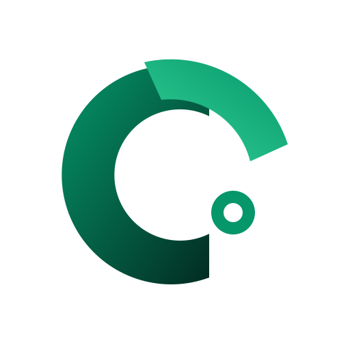

Colección Oficial: "La Balanza"
Exploraciones refinadas sobre la línea seleccionada para Cuentas Claras

Variación 1 · Diseño Base Aprobado
La Balanza Convergente
Los dos arcos circulares asimétricos formando las iniciales C+C con el nodo focal de balance en el cuadrante inferior derecho. Es la versión original que seleccionaste.
balanza-original.svg

Variación 2 · Partida Doble
Simetría Áurea y Doble Flujo
Ambos arcos tienen peso óptico idéntico y giran en un equilibrio dinámico continuo (Debe = Haber) con dos nodos complementarios. Simboliza circulación y armonía.
balanza-simetria-aurea.svg

Variación 3 · Digital & Precisión
Corte de Precisión a 45°
Mantiene la curva de la balanza pero corta los extremos con biseles geométricos a 45° y un nodo en rombo pulido. Da una sensación más técnica de software suizo.
balanza-precision-cut.svg
Variación 4 · Icono de Escritorio
App Icon (Dock & Instalador)
La Balanza enmarcada en un contenedor squircle oscuro con iluminación suave, ideal para el ejecutable de Tauri, la barra de tareas de Windows y el Dock de macOS.
balanza-app-icon.svg
PRUEBA DE NITIDEZ ÓPTICA (ORIGINAL):
48px (Dock)
32px (Barra)
20px (Navbar)
16px (Favicon)